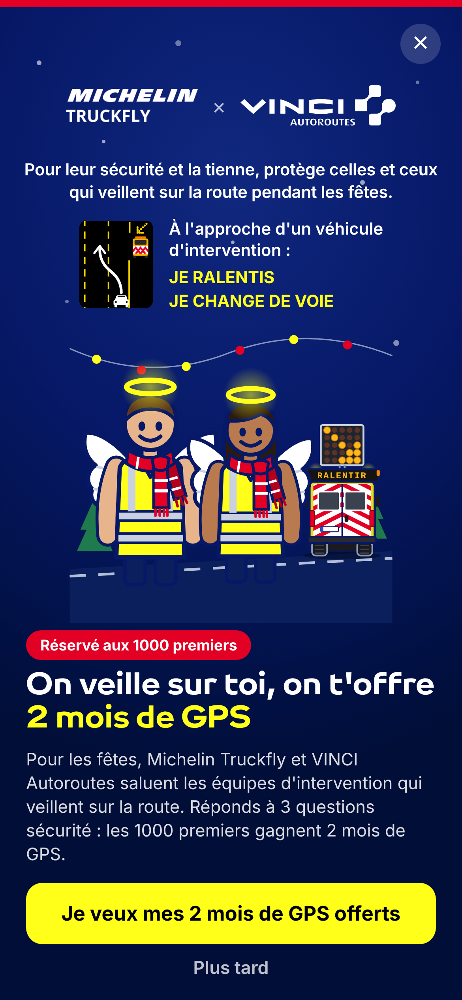

Tous les textes du parcours, de l'interstitiel à l'écran de fin. Pour chaque élément : la version actuelle (en jaune), d'autres tournures possibles, et de la place pour tes idées.
Les règles à garder en tête (retours VINCI du 18/11)
Pas de « gilet jaune » ni d'« anges gardiens » dans les textes (le gilet reste dans le visuel).
Formulations non genrées : « celles et ceux », « les équipes d'intervention », « elles et ils »…
Tutoiement, comme dans l'app Michelin Truckfly.
Le bloc « À l'approche d'un véhicule d'intervention : je ralentis, je change de voie » est imposé par VINCI : on n'y touche pas.
Longueurs indicatives pour que ça tienne à l'écran : titre ≈ 45 caractères, bouton ≈ 32 caractères, accroche ≈ 2 lignes.

Version 1 · avec ailes et auréolesVersion 2 · patrouilleurs
Le parcours
Les 4 écrans
1 · l'interstitiel dans l'app → 2 et 3 · le quiz Tally (une seule page) → 4 · l'écran de confirmation.
Écran 1L'interstitiel
L'accroche
En haut, sous les logos.
Version actuellePour leur sécurité et la tienne, protège celles et ceux qui veillent sur la route pendant les fêtes.
Autres tournures
Pendant les fêtes, les équipes d'intervention veillent sur la route. Pour leur sécurité et la tienne, laisse-leur de la place.
Elles et ils travaillent pendant que tu roules : pour leur sécurité et la tienne, ralentis et change de voie.
Ce Noël, offre de la place à celles et ceux qui interviennent sur l'autoroute.
Sur l'autoroute, des équipes veillent sur toi, même à Noël. Pour leur sécurité et la tienne, garde tes distances.
Pendant les fêtes aussi, des équipes interviennent sur ta route. Protège-les, protège-toi.
Tes idées
Le bloc corridor de sécurité
Sous l'accroche, à côté du pictogramme.
À l'approche d'un véhicule d'intervention : JE RALENTIS · JE CHANGE DE VOIE Texte imposé par VINCI Autoroutes, à garder tel quel.
Le badge
Pastille rouge au-dessus du titre.
Version actuelleRéservé aux 1000 premiers
Autres tournures
1000 accès à gagner
Offre limitée : 1000 places
Cadeau de fin d'année
Les 1000 premiers seulement
Tes idées
Le titre
Le texte le plus visible de l'écran (≈ 45 caractères).
Version actuelleOn veille sur toi, on t'offre 2 mois de GPS
Autres tournures
Pour les fêtes, 2 mois de GPS offerts
Roule en sécurité, on t'offre 2 mois de GPS
Un cadeau pour la route : 2 mois de GPS
Laisse-leur de la place, on t'offre ton GPS
Joyeuses fêtes : 2 mois de GPS offerts
Tes idées
Le texte sous le titre
2 à 4 lignes, juste au-dessus du bouton.
Version actuellePour les fêtes, Michelin Truckfly et VINCI Autoroutes saluent les équipes d'intervention qui veillent sur la route. Réponds à 3 questions sécurité : les 1000 premiers gagnent 2 mois de GPS.
Autres tournures
Michelin Truckfly et VINCI Autoroutes s'associent pour les fêtes. Réponds à 3 questions sécurité : les 1000 premiers gagnent 2 mois de GPS.
3 questions, 1 minute : les 1000 premiers repartent avec 2 mois de GPS offerts.
Teste tes réflexes face aux véhicules d'intervention et gagne 2 mois de GPS. Réservé aux 1000 premiers.
Avec VINCI Autoroutes, on fête la sécurité sur la route : réponds au quiz et récupère 2 mois de GPS, dans la limite de 1000 participants.
Tes idées
Le bouton
Bouton jaune (≈ 32 caractères), « Plus tard » reste en dessous.
Version actuelleJe veux mes 2 mois de GPS offerts
Autres tournures
Je veux gagner 2 mois de GPS
Je réponds au quiz
Je participe
Je récupère mon GPS
C'est parti !
Tes idées
Écrans 2 et 3Le quiz Tally
Le titre du formulaire
Version actuelleQuiz sécurité · 2 mois de GPS offerts
Autres tournures
3 questions pour 2 mois de GPS
Le quiz du corridor de sécurité
Sur la route des fêtes : le quiz sécurité
Tes idées
L'introduction
Version actuellePour leur sécurité et la tienne, protège celles et ceux qui veillent sur la route pendant les fêtes. Michelin Truckfly et VINCI Autoroutes s'associent pour rappeler les bons réflexes face aux équipes d'intervention, présentes jour et nuit sur l'autoroute. Réponds à 3 questions : les 1000 premiers participants gagnent 2 mois de GPS offerts.
Autres tournures
Jour et nuit, même pendant les fêtes, des équipes d'intervention travaillent sur l'autoroute. Connais-tu les bons réflexes pour les protéger ? Réponds à 3 questions : les 1000 premiers gagnent 2 mois de GPS.
1 minute, 3 questions, 2 mois de GPS offerts aux 1000 premiers. C'est parti !
Tes idées
Question 1 · le corridor de sécurité
Version actuelleUn véhicule d'intervention est arrêté sur la bande d'arrêt d'urgence, gyrophares allumés. Que fais-tu ? A. Je garde ma voie et ma vitesse · B. Je ralentis et je change de voie, ou je m'écarte le plus possible · C. Je klaxonne pour signaler ma présence
Autres tournures de la question
Gyrophares allumés sur la bande d'arrêt d'urgence : quel est le bon réflexe ?
Tu approches d'un fourgon d'intervention arrêté. Tu fais quoi ?
Une équipe intervient sur le bord de l'autoroute. Comment la protèges-tu ?
Tes idées
Question 2 · l'amende
Version actuelleQue risques-tu si tu ne respectes pas le corridor de sécurité ? A. Rien, c'est une simple recommandation · B. Une amende de 135 € · C. Un simple avertissement
Autres tournures de la question
Ne pas respecter le corridor de sécurité, ça coûte combien ?
Le corridor de sécurité, c'est obligatoire ?
Tu ne t'écartes pas d'un véhicule d'intervention : que dit le code de la route ?
Autres réponses possibles
A. 35 € · B. 135 € · C. 375 €
A. Non, c'est un conseil · B. Oui, sous peine d'une amende de 135 € · C. Seulement la nuit
Tes idées
Question 3 · la panne
Version actuelleTon camion tombe en panne sur l'autoroute. Quel est le bon réflexe ? A. Je reste dans ma cabine, ceinture attachée, en attendant les secours · B. Feux de détresse, gilet enfilé, je sors et je me mets derrière la glissière · C. Je pose mon triangle de pré-signalisation derrière le camion
Autres tournures de la question
Panne sur l'autoroute : quel est ton premier réflexe ?
Ton camion s'arrête sur la bande d'arrêt d'urgence. Où te mets-tu à l'abri ?
Panne ou accident sur l'autoroute : que fais-tu en premier ?
Tes idées
Les « Le saviez-vous ? »
Repris du dépliant VINCI : à garder tels quels ou à faire valider s'ils changent.
1. 67 % des conducteurs français n'appliquent pas systématiquement la règle du corridor de sécurité, alors que le code de la route oblige à ralentir et à changer de voie, ou à s'écarter le plus possible. (Ipsos pour la Fondation VINCI Autoroutes, 2024) 2. Un balisage est une zone d'intervention dont l'accès est strictement interdit. Sur l'autoroute, des aires sont accessibles tous les 15 km environ pour stationner en toute sécurité.
Le consentement et la mention
Version actuelleJ'accepte que Michelin Truckfly active mon offre sur mon compte et me contacte à ce sujet. Offre réservée aux 1000 premiers participants, une participation par compte Michelin Truckfly. Tes données servent uniquement à activer ton offre.
Autres tournures
J'accepte que Michelin Truckfly active mes 2 mois de GPS offerts sur mon compte.
Je participe à l'offre et j'accepte que Michelin Truckfly me contacte à ce sujet.
Tes idées
Le bouton de validation
Version actuelleJe valide ma participation
Autres tournures
J'envoie mes réponses
Je valide et je récupère mon GPS
C'est envoyé !
Tes idées
Écran 4La confirmation
Le titre
Version actuelleOn a bien reçu ta participation ! 🎄
Autres tournures
C'est validé, merci !
Bien joué, ta participation est enregistrée !
Merci et bonnes fêtes !
Tes idées
La date d'activation
Encadré jaune, juste sous le titre. Date à confirmer avec VINCI.
Version actuelleTu fais partie des 1000 premiers : profite de tes 2 mois de GPS dès le [date], directement sur ton compte Michelin Truckfly.
Autres tournures
Tes 2 mois de GPS t'attendent dès le [date] sur ton compte Michelin Truckfly.
Rendez-vous le [date] : tes 2 mois de GPS seront activés automatiquement.
Ton cadeau arrive le [date] : 2 mois de GPS offerts, sans rien faire de plus.
Tes idées
Les bonnes réponses et les règles de sécurité
Repris du dépliant VINCI : à garder tels quels.
Les 3 bonnes réponses expliquées, puis les règles en cas de panne ou d'accident (feux de détresse, bande d'arrêt d'urgence ou refuge, gilet, évacuer, derrière la glissière, borne orange, 112, pas de triangle) et si l'on est témoin d'un accident.
La phrase de fin
Version actuellePour leur sécurité et la tienne, laisse de la place aux équipes d'intervention. Bonnes fêtes et bonne route !
Autres tournures
Sur la route des fêtes, ralentis et change de voie. Bonne route !
Merci de veiller sur celles et ceux qui veillent sur toi. Bonnes fêtes !
Tes idées
Le message quand l'offre est terminée
S'affiche quand les 1000 places sont prises.
Version actuelleLes 1000 accès ont trouvé preneur 🎄 Merci pour ta participation ! L'offre est terminée. Les équipes d'intervention veillent toujours sur la route : laisse-leur de la place. Bonnes fêtes et bonne route !
 Version 2 · patrouilleurs
Version 2 · patrouilleurs